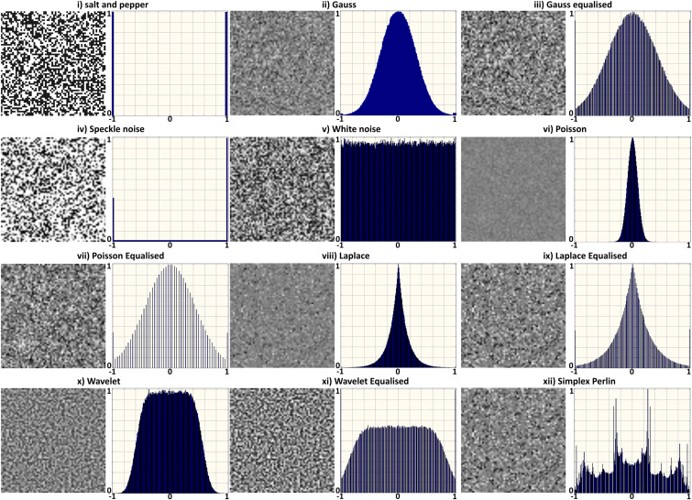
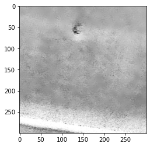

Denoise
Images can be corrupted by noise. To suppress and improve the image analysis various filtering techniques have been developed.
Denoising the image is very usefull before the detection of peaks.
In findpeaks we incorporated some well-known filtering methods: Frost, Lee, and Kuan, but also other methods such as fastnl, bilateral, mean and median filters.
Some of the methods are adopted from pyradar [1], for which the code is refactored and rewritten for Python 3. Other methods are adopted from python-opencv.
It is generally known that noise can follow various distributions, and requires different approaches to effectly reduce the noise.
 |
SAR images are affected by speckle noise that inherently exists in and which degrades the image quality. It is caused by the back-scatter waves from multiple distributed targets. It is locally strong and it increases the mean Grey level of local area. Reducing the noise enhances the resolution but tends to decrease the spatial resolution too.
Lets demonstrate the denoising by example. First we will import the example data:
# Import library
import matplotlib.pyplot as plt
from findpeaks import findpeaks
# Import image example
img = fp.import_example('2dpeaks_image')
import findpeaks
# Some pre-processing
# Resize
img = findpeaks.stats.resize(img, size=(300,300))
# Make grey image
img = findpeaks.stats.togray(img)
# Scale between [0-255]
img = findpeaks.stats.scale(img)
# Plot
plt.imshow(img, cmap='gray_r')
# filters parameters
# window size
winsize = 15
# damping factor for frost
k_value1 = 2.0
# damping factor for lee enhanced
k_value2 = 1.0
# coefficient of variation of noise
cu_value = 0.25
# coefficient of variation for lee enhanced of noise
cu_lee_enhanced = 0.523
# max coefficient of variation for lee enhanced
cmax_value = 1.73
|

Lee
The Additive Noise Lee Despeckling Filter can be used with the function: findpeaks.filters.lee.lee_filter()
Let’s assume that the despeckling noise is additive with a constant mean of zero, a constant variance, and drawn from a Gaussian distribution. Use a window (I x J pixels) to scan the image with a stride of 1 pixels (and I will use reflective boundary conditions). The despeckled value of the pixel in the center of the window located in the ith row and jth column is, zhat_ij = mu_k + W*(z_ij = mu_z), where mu_k is the mean value of all pixels in the window centered on pixel i,j, z_ij is the unfiltered value of the pixel, and W is a weight calculated as, W = var_k / (var_k + var_noise), where var_k is the variance of all pixels in the window and var_noise is the variance of the speckle noise. A possible alternative to using the actual value of the center pixel for z_ij is to use the median pixel value in the window. The Lee methods assumes noise mean = 0.
The parameters of the filter are the window/kernel size and the variance of the noise (which is unknown but can perhaps be estimated from the image as the variance over a uniform feature smooth like the surface of still water). Using a larger window size and noise variance will increase radiometric resolution at the expense of spatial resolution [3]. Note that the Lee filter may not behave well at edges because for any window that has an edge in it, the variance is going to be much higher than the overall image variance, and therefore the weights (of the unfiltered image relative to the filtered image) are going to be close to 1.
# lee filter
image_lee = findpeaks.lee_filter(img, win_size=winsize, cu=cu_value)
# Plot
plt.imshow(image_lee, cmap='gray_r')
|

Lee Enhanced
findpeaks.filters.lee_enhanced.lee_enhanced_filter()
# lee enhanced filter
image_lee_enhanced = findpeaks.lee_enhanced_filter(img, win_size=winsize, k=k_value2, cu=cu_lee_enhanced, cmax=cmax_value)
# Plot
plt.imshow(image_lee_enhanced, cmap='gray_r')
|

Lee Sigma
Improved Lee Sigma, according to Lee Sigma filter in SNAP Sentinel-1 Toolbox. Apply the filter with a window of win_size x win_size to a numpy matrix (containing the image), before converting to dB.
Note
Jong-Sen Lee, Jen-Hung Wen, T. L. Ainsworth, Kun-Shan Chen and A. J. Chen, “Improved Sigma Filter for Speckle Filtering of SAR Imagery”, IEEE Transactions on Geoscience and Remote Sensing, vol. 47, no. 1, pp. 202-213, Jan. 2009, doi: 10.1109/TGRS.2008.2002881.
findpeaks.filters.lee_sigma.lee_sigma_filter()
# lee enhanced filter
image_lee_sigma = findpeaks.lee_sigma_filter(img, sigma=0.9, win_size=7, num_looks=1, tk=5)
# Plot
plt.imshow(image_lee_sigma, cmap='gray_r')
|

Kuan
findpeaks.filters.kuan.kuan_filter()
# kuan filter
image_kuan = findpeaks.kuan_filter(img, win_size=winsize, cu=cu_value)
# Plot
plt.imshow(image_kuan, cmap='gray_r')
 |
Frost
findpeaks.filters.frost.frost_filter()
# frost filter
image_frost = findpeaks.frost_filter(img, damping_factor=k_value1, win_size=winsize)
# Plot
plt.imshow(image_frost, cmap='gray_r')
|

Mean
findpeaks.filters.mean.mean_filter()
# mean filter
image_mean = findpeaks.mean_filter(img.copy(), win_size=winsize)
# Plot
plt.imshow(image_mean, cmap='gray_r')
|

Median
findpeaks.filters.median.median_filter()
# median filter
image_median = findpeaks.median_filter(img, win_size=winsize)
# Plot
plt.imshow(image_median, cmap='gray_r')
|

Fastnl
# fastnl
img_fastnl = findpeaks.stats.denoise(img, method='fastnl', window=winsize)
# Plot
plt.imshow(img_fastnl, cmap='gray_r')
|

Bilateral
The bilateral filter, findpeaks.stats.denoise(), uses a Gaussian filter in the space domain, but it also uses one more (multiplicative) Gaussian filter component which is a function of pixel intensity differences.
The Gaussian function of space makes sure that only pixels are ‘spatial neighbors’ are considered for filtering,
while the Gaussian component applied in the intensity domain (a Gaussian function of intensity differences)
ensures that only those pixels with intensities similar to that of the central pixel (“intensity neighbors”)
are included to compute the blurred intensity value. As a result, this method preserves edges, since for pixels lying near edges,
neighboring pixels placed on the other side of the edge, and therefore exhibiting large intensity variations when compared to the central pixel, will not be included for blurring.
# bilateral
img_bilateral = findpeaks.stats.denoise(img, method='bilateral', window=winsize)
# Plot
plt.imshow(img_bilateral, cmap='gray_r')
|